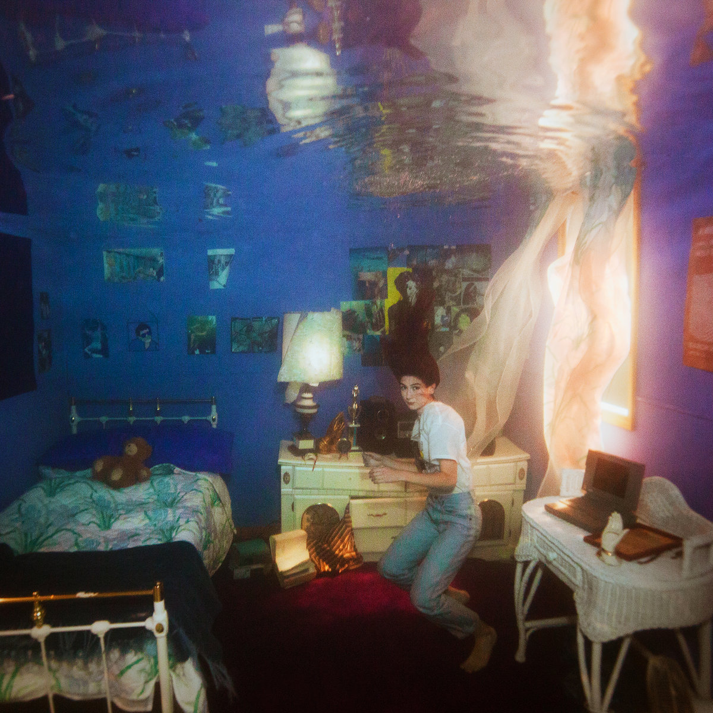
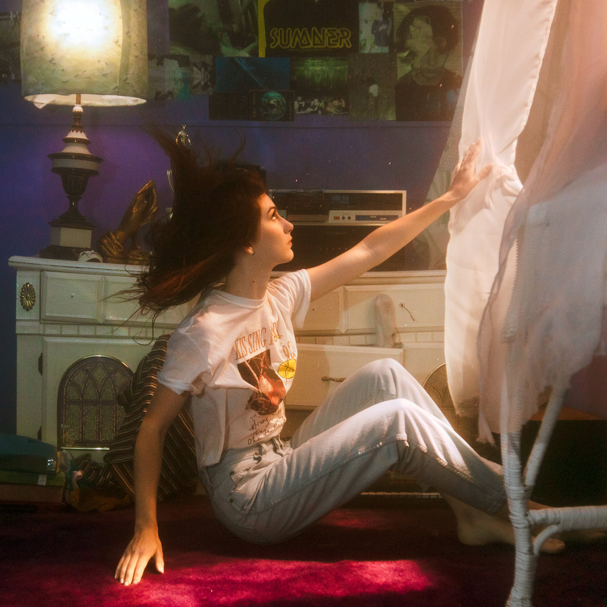
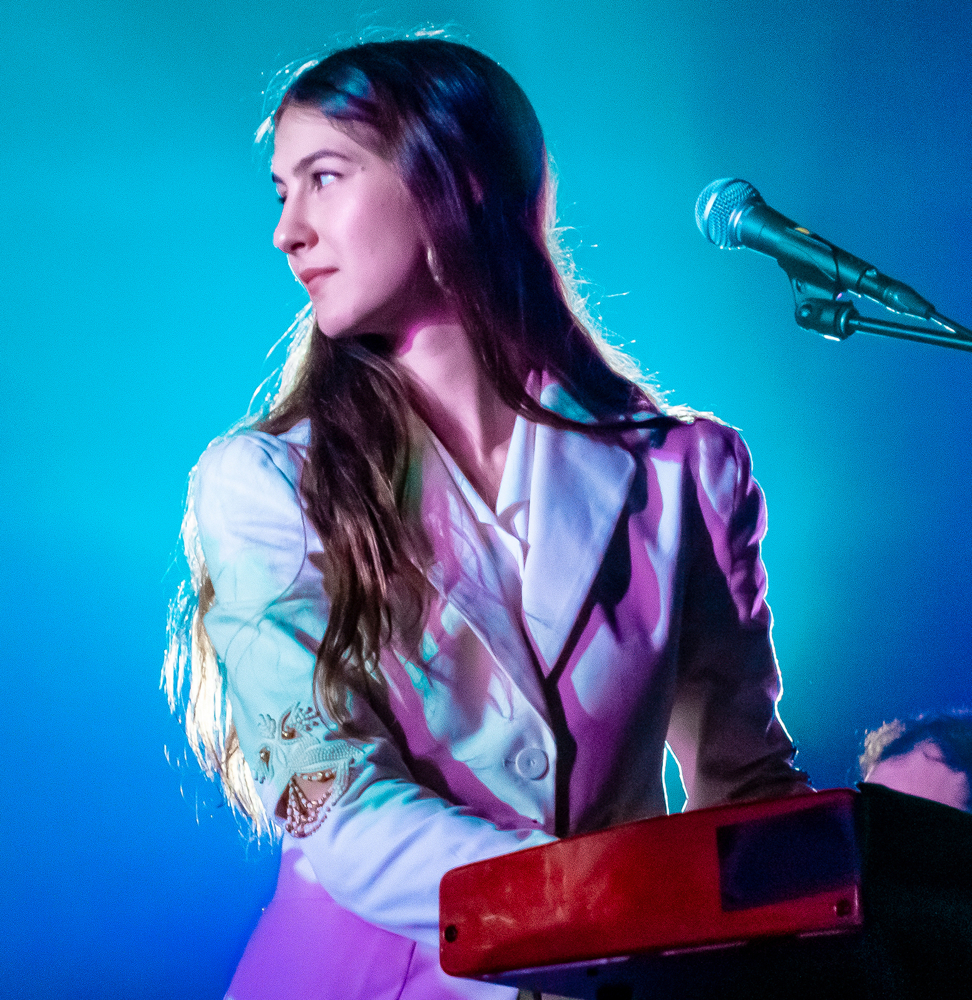

Titanic Rising, by Weyes Blood
 | Titanic Rising: | |
|---|---|
| 1. | A Lot's Gonna Change |
| 2. | Andromeda |
| 3. | Everyday |
| 4. | Something to Believe |
| 5. | Titanic Rising |
| 6. | Movies |
| 7. | Mirror Forever |
| 8. | Wild Time |
| 9. | Picture Me Better |
| 10. | Nearer to Thee |
About the Album:
Titanic Rising is an album that I came across at exactly the time that I needed to hear it. I was going through my all-time worst breakup, and had skipped town on a two week roadtrip through the greater western United States to live out of my car and hike in 7 National Parks. The melodic voice and heart-lead lyrics truly lifted me and carried me through this trip. The crescendos and messages healed my heart on the road, from the desert to the rockies. The raw and unapologetic lyrics used by Weyes Blood in this album feel like a mirror into my own soul. If I had to pick my favorite tracks, Something to Believe comes in first by a mile, followed by Andromeda & A Lot's Gonna Change, with every remaining song settling lightly together as cherished messages of perseverence and trust in oneself. This album is very melodical and has a light sound but carries heavily weighted substance.
About the Artist:
Natalie Laura Mering is the face of Weyes Blood, she grew up in PA and began making music in Portland. Natalie started recording her own music under variations of the name Weyes Blood until her "debut" album as Weyes Blood in 2011, The Outside Room. When Titanic Rising was released, Mering described it as an album that explores romantic disappointment, damaged reality, and finding hope. All reasons that I was drawn to this album like a moth to the flame.
